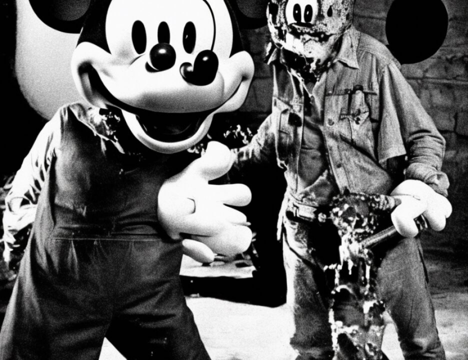

14 in any event. The masterminds behind the two bombings
15 obviously thought that there would be a greater impact by
16 having a simultaneous explosion, but there is nothing that he
17 does -- he, Al-'Owhali, does -- which furthers the Dar es
18 Salaam bombing itself.
19 MR. FITZGERALD: Two points. First, your Honor,
20 Section 2 is charged in the indictment explicitly. Secondly,
21 I believe the testimony from Agent Gaudin was that they were
22 to make a phone call before the bombings happened to make sure
23 they're still on and the central people will know that the
24 Nairobi bombing may be prominent, but if Al-'Owhali doesn't
25 carry out the Nairobi bombing and they can't go forward on
3922
1 Friday, August 7th, they may not go forward in Dar es Salaam.
2 The headquarters want to know that this is happening.
3 THE COURT: But the indictment itself separates the
4 two. You put the Nairobi bombing in one series of counts and
5 you put the Tanzania bombing in another series of counts. The
6 indictment itself treats them as independent.
7 MR. FITZGERALD: The indictment treats every victim
8 killed independently as well, but it doesn't mean that the
9 person is not responsible for all the people killed. There
10 may be 11 counts in Dar es Salaam and maybe 211 in Nairobi,
11 separate counts, but the enterprise, the way they looked at
12 it, they were doing two bombings simultaneously and he
13 expressly knew that at the time he carried out the bombing.
14 THE COURT: I think that is not sufficient for aiding
15 and abetting and I will grant the motions to dismiss as to the
16 substantive Tanzania counts as to Al-'Owhali, and those would
17 be the same counts that we had previously discussed, 8, 10,
18 282, 286, 277, 279, 224 to 234.
19 Now I have some other specific things, but one of
20 the -- there are two consequences on that --
21 MR. RICCO: Judge, it may not be an important point,
2